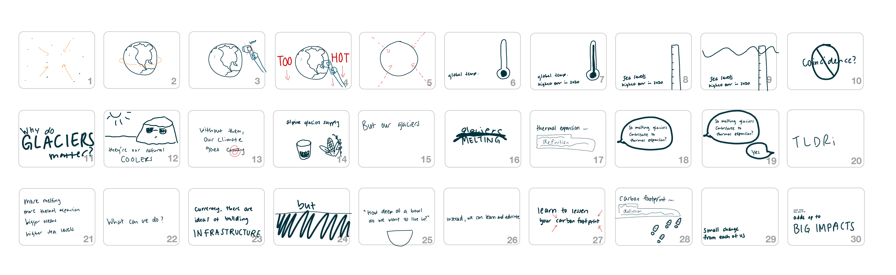

Glaciers: An Informational Motion Animation
Motion Graphics and Animation
December 2022
Research
I wanted to make sure the information shown in my animation covered a little bit of everything so I sought out to collect research. I ended with 1 and a half page of information that I wanted to make sure the viewer can learn about from the animation.
Development
I turned to a script format before starting storyboarding scene to give myself a clear idea of how I wanted the flow of the animation to go. This included the narrative I wanted the animation to follow, what I wanted to becareful of, and wording that I wanted to show in the animation (because there is a lot!). These were important because the animations would be boring if the information was too dense and hard to follow. In addition, global warming has been a topic that’s been almost normalized to most people so I wanted make sure the information appeared fresh and worth paying attention to.
Storyboarding
The storyboard is where I planned out the visuals that follow my planned script.
